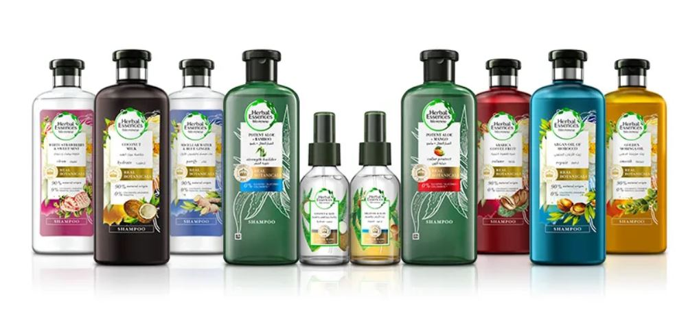

Herbal Essences
Champús y acondicionadores, con ingredientes botánicos avalados por expertos del Real Jardín Botánico de Kew Arraigados en la ciencia de las plantas e impulsados por la naturaleza, nuestros productos botánicos son identificados por científicos reales en el Real Jardín Botánico de Kew. Un destacado experto en plantas y hongos desde hace 260 años. Juntos, estamos descubriendo los secretos de la naturaleza y manteniendo las cosas reales. Lea más sobre cómo Herbal Essences y el Real Jardín Botánico de Kew están fusionando la ciencia con el cuidado del cabello para ofrecerle champús y acondicionadores botánicos.
La belleza de la biodiversidad El Real Jardín Botánico de Kew en Londres tiene más biodiversidad que la selva amazónica* con más de 30.000 especies diferentes de plantas y semillas. Tiene una extensa colección de semillas, muestras secas y colecciones vivas que se remontan a la época de Charles Darwin. Aquí, los científicos celebran la biodiversidad y la riqueza vegetal del mundo y las hacen accesibles a todos. El Real Jardín Botánico de Kew y Herbal Essences creen que debemos utilizar nuestra experiencia científica, biológica y botánica colectiva para aumentar nuestra comprensión de por qué las plantas y los hongos son tan importantes para nuestras vidas hoy y nuestro mundo mañana.
Acerca de Kew Real Jardín Botánico, logotipo de Kew rodeado de ilustraciones de plantas El Real Jardín Botánico de Kew es una organización científica de fama mundial, respetada internacionalmente por sus destacadas colecciones, así como por su experiencia científica en diversidad de plantas, conservación y desarrollo sostenible en el Reino Unido y en todo el mundo. Kew Gardens es una importante atracción internacional y una de las principales para los visitantes de Londres. Las 132 hectáreas de jardines paisajísticos de Kew y Wakehurst, el jardín botánico salvaje de Kew, atraen más de 2,1 millones de visitas cada año. Kew fue declarado Patrimonio de la Humanidad por la UNESCO en julio de 2003 y celebra su 260 aniversario en 2019. Wakehurst alberga el Millennium Seed Bank de Kew, el banco de semillas de plantas silvestres más grande del mundo.